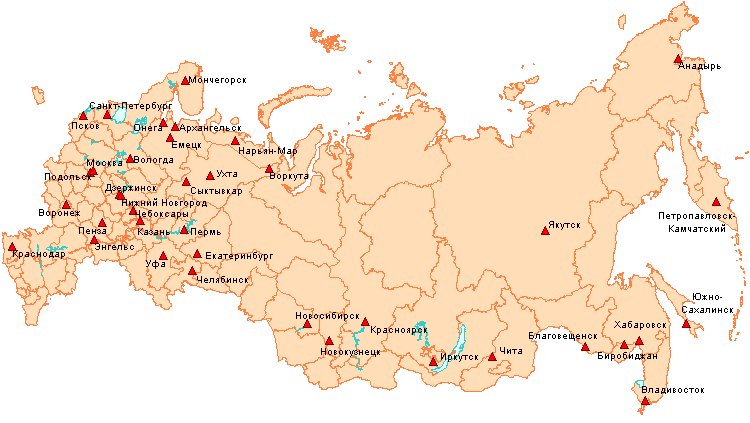

Представляем новую версию популярного программного продукта - ГеоГраф ГИС 2.0. |
Кроме того, бесплатно предоставляются демонстрационные карты: Политическая карта мира и карта России (до уровня административных районов).
|
Управление магистральных нефтепроводов "Дружба" (Гомель, Белоруссия) - 9 рабочих мест
(с 1995 г. практически весь транспорт нефти из России через Белоруссию имеет ГИС-поддержку
на базе программных продуктов ЦГИ ИГРАН, включая ГеоКонструктор-web). презентация в PowerPoint.(4.8Mb) |
| ЗАО "Артель старателей"Амур" 16 рабочих мест (г. Хабаровск) геология |
| Всероссийская партия "Единство и Отечество" - 5 рабочих мест (г. Москва) |
| Благовещенская телеграфно-телефонная сеть - 5 рабочих мест |
| Псковский областной дорожный комитет - 5 рабочих мест |
| ГУП "Приборостроительный завод" - 5 рабочих мест (г.Трехгорный Челябинская обл.) |
| МУП "Водоканал" (г. Подольск) - 4 рабочих места |
| Институт геологии Коми НЦ УрО РАН - 3 рабочих места |
| Институт экономики природрпользования - 2 рабочих места (г. Москва) экология |
| Московский центр автоматизированного управления воздушным движением |
| Камчатское топографо-геодезическое предприятие |
| Ненецкий информационно-аналитический центр (г. Нарьян-Мар) |
| ВНИИЛМ (г. Пушкино) |
| Компания "Сибирский Берег" (г. Новосибирск) |
| Российское представительство GlaxoSmithKline Pharmaceuticals |
| ОАО "Центральная телекоммуникационная компания ", Серпуховский узел электросвязи |
| Институт комплексного анализа региональных проблем (г. Биробиджан) |
| ОАО "МТС" (г. Москва) |
| ДП ФГУП ДальНИИВХ (г. Владивосток) |
| КГПО "Горзеленхозстрой" (г. Королев) |
| ГНПП "Севморгео" (г. Санкт-Петербург) геология |
| ЦНИИП градостроительства (г. Москва) |
| Комитет охраны природы и управлением природопользованием Нижегородской области |
| МП "ИТЦ"Кубань-ЮГ" (г. Краснодар) |
| ОАО "Онегалес" (г. Онега Архангельской области) |
| Воронежский государственный педагогический университет |
| ЗАО "Инженерный центр Коми нефтяной компании" (г. Ухта) |
| Ботанический институт им. В.Л. Комарова (г. Санкт-Петербург) |
| Ряд землеустроительных, лесоустроительных, геологоразведочных предприятий в разных регионах России. |
| ЗАО "Водоканал (г. Новокузнецк) |
| Белорусский научно-исследовательский геологоразведочный институт "Белгеология" (г. Минск) |
| Институт народнохозяйственного прогнозирования РАН (г. Москва) |
| Главное управление природных ресурсов МПР Чувашской Республики (г. Чебоксары) |
| ДП ФГУП ВостокНИИВХ (г. Чита) |
| Российская академия государственной службы при Президенте РФ |
| Всероссийский научно-исследовательский институт рыбного хозяйства и океанографии (г. Москва) |
